10 집계표
업로드한 데이터나 저장된 데이터를 집계하는 방법을 다룹니다. 수치형 변수와 범주형 변수의 특성별로 요약 집계와 시각화를 수행하는 방법을 설명합니다.
10.1 집계표 기능
집계표 메뉴에서는 수치형 변수의 통계표와 범주형 변수의 돗수분포표, 분할표를 작성하고 시각화합니다.
- 수치형 변수 통계표
- 범주형 변수 돗수분포표
- 범주형 변수 분할표
10.1.1 수치형 변수 통계표
수치형 변수의 통계표를 작성하고 분포를 시각화합니다.
통계표 기능은 기술통계 > 집계표 > 수치형 변수 통계표의 메뉴 체계로 접근합니다.
10.1.1.1 집계를 위한 입력 위젯
- 대상변수 선택 방법:
- 레디오 버튼으로
전체와사용자 선택에서 하나를 선택합니다. - 전체
- 기본 설정값으로 모든 수치형 변수를 분석 대상으로 선정합니다.
- 사용자 선택
- 사용자가 분석할 수치형 변수를 선택합니다.
- 사용자 선택을 체크하면,
수치형 변수 목록(하나이상 선택):리스트 박스가 나타납니다.
- 레디오 버튼으로
- 수치형 변수 목록(하나이상 선택):
대상변수 선택 방법:에서사용자 선택을 지정했을 때만 나타납니다.- 모든 수치형 변수에서 하나 이상의 변수를 선택할 수 있습니다.
- 통계량 종류:
- 집계 테이블에 출력할 통계량을 선택합니다.
결측치수,산술평균,표준편차,왜도,첨도,관측치수,표준오차,사분위수범위에서 선택합니다.결측치수,산술평균,표준편차,왜도,첨도가 기본 선택됩니다.
- 분위수 종류:
- 집계 테이블에 출력할 분위수를 선택합니다.
최솟값,1/4분위,중위수,3/4분위,최댓값,1%분위,5%분위,10%분위,20%분위,30%분위,40%분위,60%분위,70%분위,80%분위,90%분위,95%분위,99%분위에서 선택합니다.최솟값,1/4분위,중위수,3/4분위,최댓값이 기본 선택됩니다.
- 범주별 계산
- 수치형 변수의 통계표를 범주형 변수들의 레벨별로 그룹핑하여 계산하는 기능입니다.
- 체크박스 위젯으로 체크하면 범주별 계산을 위한
범주형 변수 목록:이 나타납니다.
- 범주형 변수 목록:
- 수치형 변수의 통계표를 범주형 변수들의 레벨별로 그룹핑할 범주형 변수를 선택합니다. 하나 이상의 범주형 변수를 선택할 수 있습니다.
- 통계량 소수점 자리수:
- 계산된 통계량의 소수점 이하 자리수를 지정합니다.
- 기본값은 3이며, 사용자가 선택할 수 있습니다.
- 시각화 여부
- 통계표와 함께, 수치형 변수의 분포를 파악할 수 있는
밀도플롯(density plot)을 함께 출력할지의 여부를 선택합니다. - 체크박스를 체크하면 플롯도 함께 출력됩니다.
- 통계표와 함께, 수치형 변수의 분포를 파악할 수 있는
10.1.1.2 기본 통계표 출력
수치형 변수 통계표에서 통계표를 출력하는 방법은 데이터셋: 리스트박스에서 diamonds 데이터를 선택을 전제로 소개합니다.
기술통계 > 집계표 > 수치형 변수 통계표의 기본 설정으로 실행 버튼을 클릭하면 오른쪽 결과 영역에 수치형 변수 집계 테이블이 출력됩니다.
이 기본 설정은 다음과 같습니다.
- 대상변수 선택 방법:
- 전체
- 통계량 종류:
결측치수,산술평균,표준편차,왜도,첨도
- 분위수 종류:
최솟값,1/4분위,중위수,3/4분위,최댓값
- 통계량 소수점 자리수:
- 3
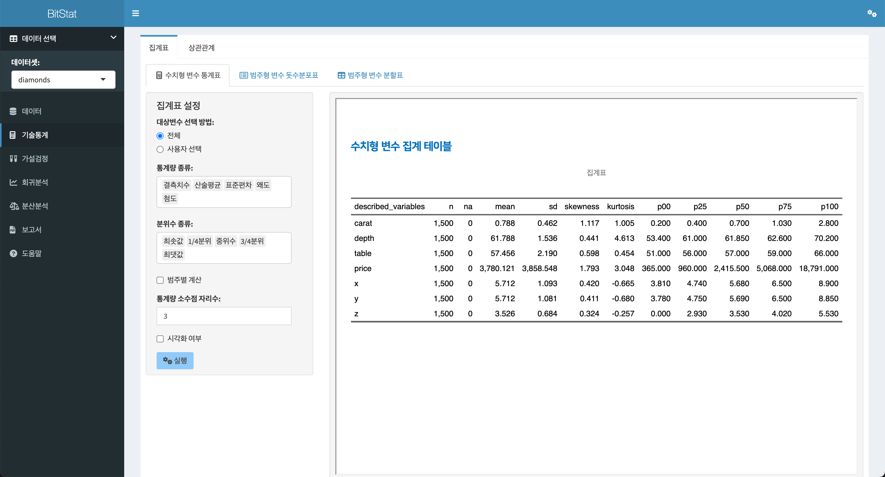
10.1.1.3 사용자 변수선택 통계표 출력
전체 수치형 변수가 아닌, 사용자가 출력할 수치형 변수를 선택할 수 있습니다. 이 예제에서는 caret, depth, table, price 변수를 선택합니다.
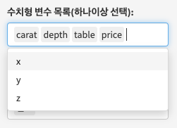
이제 집계 테이블을 위한 설정은 다음과 같이 정의되었습니다.
- 대상변수 선택 방법:
- 사용자 선택
- 수치형 변수 목록(하나이상 선택):
caret,depth,table,price
- 통계량 종류:
결측치수,산술평균,표준편차,왜도,첨도
- 분위수 종류:
최솟값,1/4분위,중위수,3/4분위,최댓값
- 통계량 소수점 자리수:
- 3
상기 조건으로 실행하면 다음과 같은 집계 테이블이 출력됩니다.
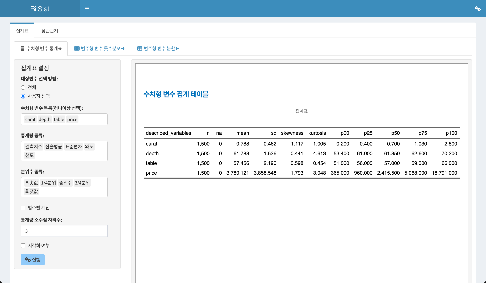
10.1.1.4 범주별 수치형 변수 통계표 출력
범주별 계산 체크 박스를 체크하면, 선택한 범주형 변수의 수준(levels)별로 수치형 변수의 통계표를 계산할 수 있습니다.
다음 그림처럼 범주별 계산 체크 박스를 체크하여 나타난 범주형 변수 목록:에서 범주형 변수인 cut을 선택합니다.
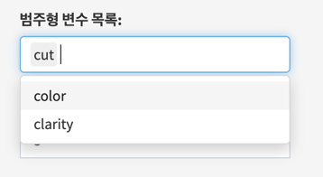
이제 집계 테이블을 위한 설정은 다음과 같이 정의되었습니다.
- 대상변수 선택 방법:
- 사용자 선택
- 수치형 변수 목록(하나이상 선택):
caret,depth,table,price
- 통계량 종류:
결측치수,산술평균,표준편차,왜도,첨도
- 분위수 종류:
최솟값,1/4분위,중위수,3/4분위,최댓값
- 범주별 계산
- 체크
- 범주형 변수 목록:
cut
- 통계량 소수점 자리수:
- 3
상기 조건으로 실행하면 다음과 같은 집계 테이블이 출력됩니다.
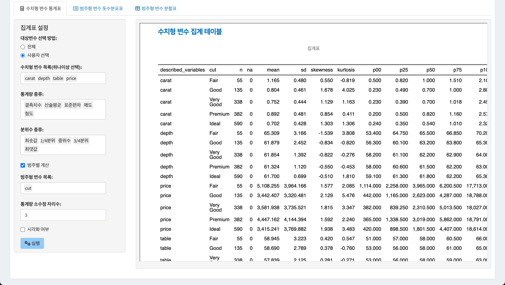
10.1.1.5 시각화와 함께 통계표 출력
집계 테이블은 여러 통계량으로 구성된 테이블이기 때문에, 해당 수치형 변수의 분포를 파악는 것은 쉽지 않습니다. 그런데 시각화와 함께 한다면 수치형 변수의 분포를 파악하기 수월해집니다.
시각화 여부 체크 박스를 체크하면, 수치형 변수의 분포를 파악할 수 있는 밀도플롯(density plot)을 함께 출력할 수 있습니다.
다음은 시각화 여부 체크 박스를 체크한 경우의 결과입니다. 집계 테이블에 출력된 수치형 변수의 개수만큼의 플롯이 출력됩니다.
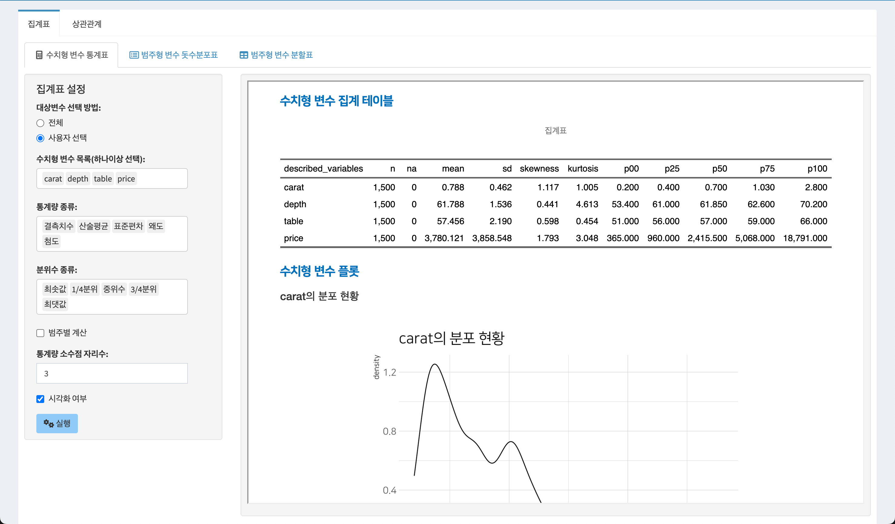
시각화 여부 체크 박스를 체크하고 범주별 변수를 선택한다면, 다음처럼 선택한 범주의 수준별로 수치형 변수의 밀도플롯이 개별 수치형 변수의 개수만큼 출력됩니다.
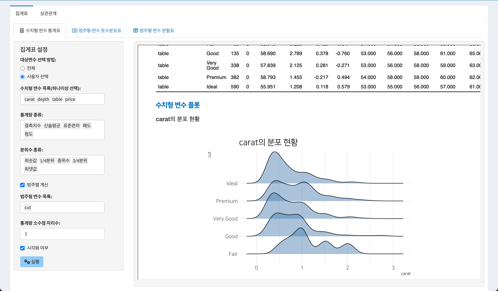
10.1.2 범주형 변수 돗수분포표
범주형 변수의 돗수분포표(frequency table)를 작성하고 분포를 시각화합니다.
범주형 변수 돗수분포표 기능은 기술통계 > 집계표 > 범주형 변수 돗수분포표의 메뉴 체계로 접근합니다.
10.1.2.1 돗수분포표를 위한 입력 위젯
- 대상변수 선택 방법:
- 레디오 버튼으로
전체와사용자 선택에서 하나를 선택합니다. - 전체
- 기본 설정값으로 모든 범주형 변수를 분석 대상으로 선정합니다.
- 사용자 선택
- 사용자가 분석할 범주형 변수를 선택합니다.
- 사용자 선택을 체크하면,
범주형 변수 목록(하나이상 선택):리스트 박스가 나타납니다.
- 레디오 버튼으로
- 범주형 변수 목록(하나이상 선택):
대상변수 선택 방법:에서사용자 선택을 지정했을 때만 나타납니다.- 모든 범주형 변수에서 하나 이상의 변수를 선택할 수 있습니다.
- 시각화 여부
- 돗수분포표와 함께, 범주형 변수의 분포를 파악할 수 있는
막대그래프(bar plot)을 함께 출력할지의 여부를 선택합니다. - 체크박스를 체크하면 플롯도 함께 출력됩니다.
- 돗수분포표와 함께, 범주형 변수의 분포를 파악할 수 있는
10.1.2.2 기본 돗수분포표 출력
범주형 변수 돗수분포표에서 돗수분포표를 출력하는 방법은 데이터셋: 리스트박스에서 diamonds 데이터를 선택을 전제로 소개합니다.
기술통계 > 집계표 > 범주형 변수 돗수분포표의 기본 설정으로 실행 버튼을 클릭하면 오른쪽 결과 영역에 범주형 변수의 돗수분포표가 출력됩니다.
이 기본 설정은 다음과 같습니다.
- 대상변수 선택 방법:
- 전체
- 시각화 여부
- 미 체크
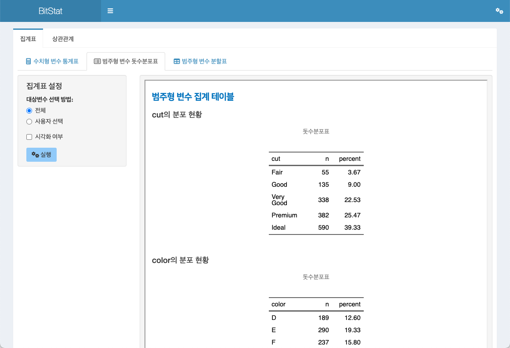
10.1.2.3 시각화와 함께 돗수분포표 출력
시각화 여부 체크 박스를 체크하면, 범주형 변수의 분포를 파악할 수 있는 막대그래프(bar plot)을 함께 출력할 수 있습니다.
다음은 시각화 여부 체크 박스를 체크한 경우의 결과입니다. 돗수분포표로 범주형 변수의 분포를 파악할 수 있는 플롯이 출력됩니다.
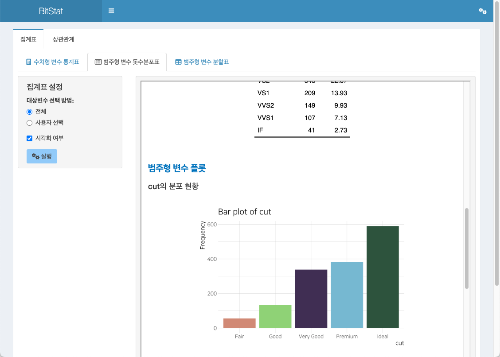
10.1.3 범주형 변수 분할표
두 범주형 변수의 분할표(contingency table)를 작성하고 분포를 시각화합니다.
통계표 기능은 기술통계 > 집계표 > 범주형 변수 분할표의 메뉴 체계로 접근합니다.
10.1.3.1 분할표를 위한 입력 위젯
- 행 변수 (한개 선택):
- 분할표의 행에 배치할 범주형 변수를 하나를 선택합니다.
- 열 변수 (한개 선택):
- 분할표의 열에 배치할 범주형 변수를 하나를 선택합니다.
- 주변 합 여부
- 생성한 분할표에 주변 합(marginal) 값의 출력 여부를 선택합니다.
- 체크 박스에 체크하면,
주변 합 종류:리스트 박스가 출력됩니다.
- 주변 합 종류:
- 분할표의 주변합에 출력할 집계 방법을 선택합니다.
주변 합,행 백분율,열 백분율,전체 백분율에서 하나를 선택합니다.- 기본값은
주변 합입니다.
- 시각화 여부
- 분할표와 함께, 두 범주형 변수의 분포를 파악할 수 있는
모자이크플롯(mosaic plot)을 함께 출력할지의 여부를 선택합니다. - 체크박스를 체크하면 플롯도 함께 출력됩니다.
- 분할표와 함께, 두 범주형 변수의 분포를 파악할 수 있는
10.1.3.2 기본 분할표 출력
기술통계 > 집계표 > 범주형 변수 분할표의 기본 설정으로 실행 버튼을 클릭하면 오른쪽 결과 영역에 두 범주형 변수의 분할표가 출력됩니다.
이 기본 설정은 다음과 같습니다.
- 행 변수 (한개 선택):
cut
- 열 변수 (한개 선택):
color
- 주변 합 여부
- 미 체크
- 시각화 여부
- 미 체크
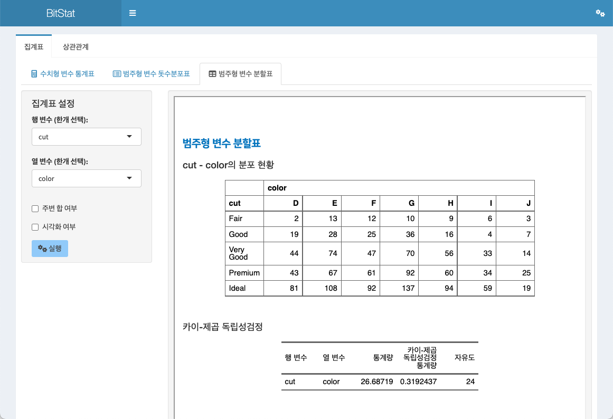
10.1.3.3 주변합 포함 분할표 출력
분할표에 개별 행/열의 집계를 위한 주변 합을 추가할 수 있습니다.
- 행 변수 (한개 선택):
cut
- 열 변수 (한개 선택):
color
- 주변 합 여부
- 체크
- 주변 합 종류:
주변 합
- 시각화 여부
- 미 체크
상기 조건으로 실행하면 다음과 같은 분할표가 출력됩니다.
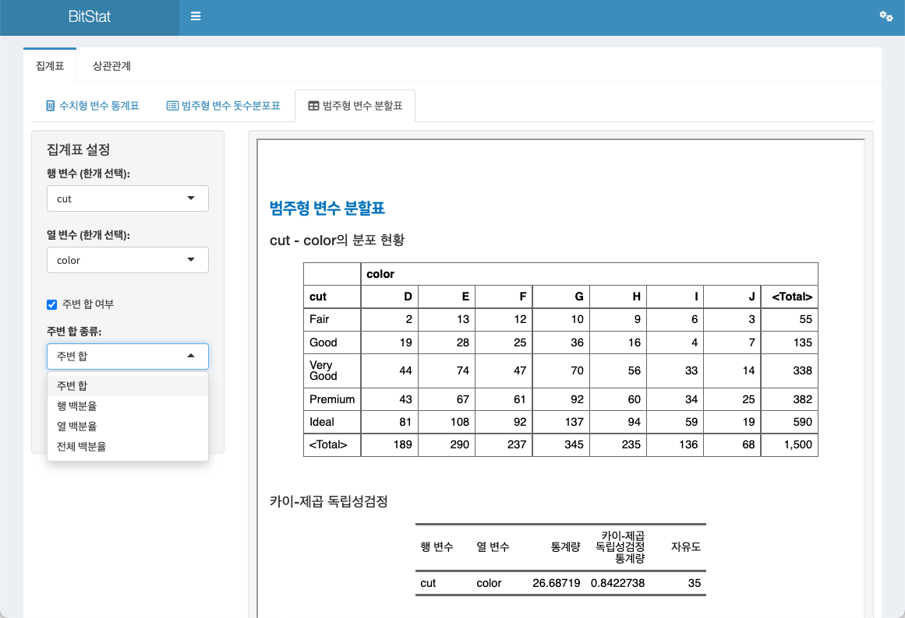
10.1.3.4 시각화와 함께 분할표 출력
시각화 여부 체크 박스를 체크하면, 두 범주형 변수의 분포를 파악할 수 있는 모자이크플롯(mosaic plot)을 함께 출력할 수 있습니다.
다음은 시각화 여부 체크 박스를 체크한 경우의 결과입니다. 분할표로 출력된 두 범주형 변수의 분포를 파악할 수 있는 플롯이 출력됩니다.
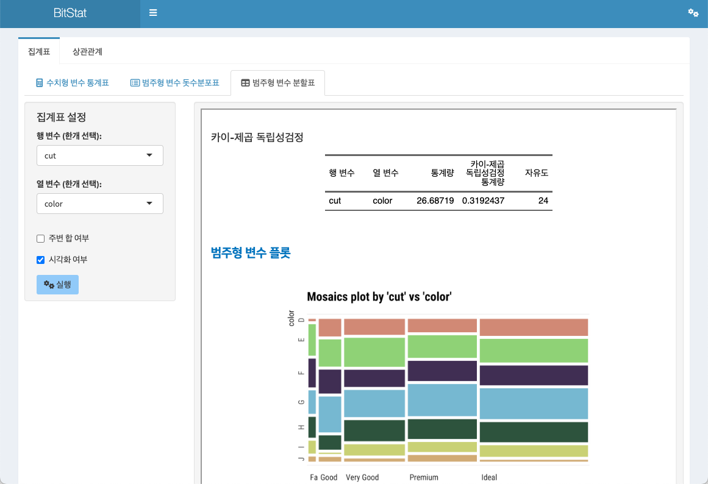